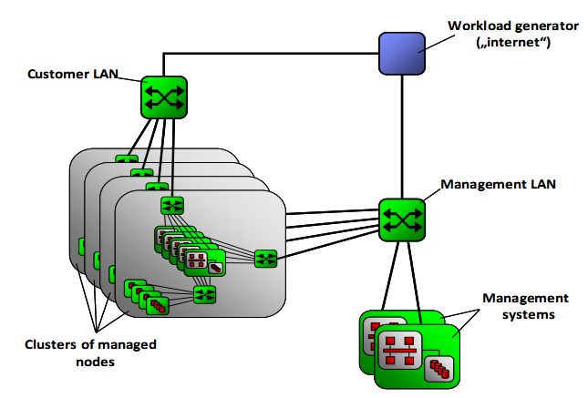
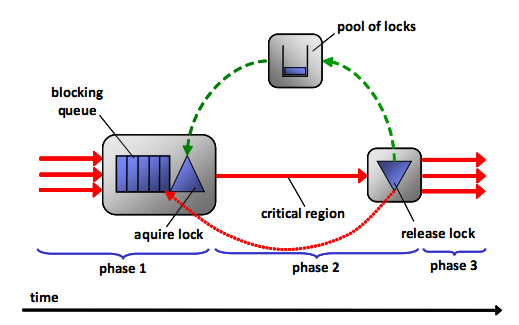

Cloud computing is a game-changing technology that provides customers with a means of consuming data center resources. Because cloud customers expect good and consistent response times to their requests irrespective of the workload already posted against the cloud, performance and scalability are essential here. Typical performance metrics include the "number of concurrent users" that a cloud can support respecting certain response time constraints, or throughput and response times of provisioning images (e.g. instances of operating systems) as a function of the number of concurrent provisioning requests in flight.
Performance and scalability of clouds handling such workloads significantly depend on the infrastructure available (in terms of physical server, networking, and storage), as well as on the software heuristics to manage this infrastructure, cloud users, approval processes, and reservation and provisioning of resources.

Dr. Altevogt (IBM Research, Germany) and his colleagues have built an OMNEST-based simulation framework for the performance simulation of clouds. The framework supports the rapid construction of new cloud models by combining available simulation blocks (modules) and, when necessary, by creating new blocks or adapting existing ones.
A key characteristic of the framework is that it differentiates between blocks that represent hardware (infrastructure) elements and blocks that are used for modeling software workflows. It also introduces a system of hierarchical request execution phases that separate the simulation of high-level cloud workflows from the simulation of workflows at the hardware component level.
The modeling of hardware is based on resource allocation: hardware components are thought of as providing the active resources (in form of processor cycles or bandwidth associated with disk or network I/O) required by the requests posted against the cloud to perform their operations as required by the business logic.

A request executing at a hardware simulation module first tries to allocate the required resources (passive ones like the amount of memory or active ones like processor cycles) to proceed. If it is successful, it decreases the available resources accordingly and proceeds to be delayed for a specified amount of time by scheduling an appropriate event in the future event list. If not, the request is inserted into a queue for the required resource and waits. When encountering the scheduled event, the request deallocates the requested resources again, increases the available resources accordingly, and retrieves the requests waiting in the appropriate queue to be scheduled immediately so that they can proceed to try to allocate the resources they require.
The careful separation of software and hardware simulation modules has several benefits. First, it allows for software and hardware-driven simulations, i.e., one may focus on detailed simulations of software workflows using rather generic and simple simulation blocks for the hardware components; or analyze the performance of a detailed simulation model of a special hardware component (e.g., a switch) exposed to typical cloud workload patterns. Second, the separation makes it straightforward to combine various software blocks with a single hardware module or vice versa, modeling e.g., several guest operating systems or virtual machines on one hypervisor or distributing requests to a cluster of physical nodes. Third, the development cycles of new hardware and software architectures for clouds are generally decoupled, which can be nicely reflected in different development cycles for the associated simulation blocks.
The framework enables capacity planning and supports the design of new cloud designs in a timely and accurate manner by supporting the creation of new cloud simulations by gluing together basic and compound simulation blocks. The implementation of the building blocks themselves may be adapted to satisfy the accuracy or execution time constraints of various performance simulation studies.
Peter Altevogt (IBM Germany Research and Development GmbH), Tibor Kiss (Gamax Kft, Budapest, Hungary), Wolfgang Denzel (IBM Research GmbH, Zurich Research Laboratory, Switzerland), 2011. "Modular performance simulations of clouds." WSC '11: Proceedings of the Winter Simulation Conference: pp. 3300-3311. 11-14 December 2011, Grand Arizona Resort, Phoenix, AZ, USA.
{% include next_casestudy_links.html %}